Fly to Christchurch, then drive to Mount Cook · about 4 hours' driving
2
Mount Cook
Mt Cook Lakeside Retreat · Lake Pūkaki
2 nights18 – 20 Dec
Drive to Queenstown with touring · about 3½ hours
3
Queenstown
The Rees Hotel & Luxury Apartments
7 nights20 – 27 Dec
Depart · Queenstown Airport, own arrangements
Where You'll Stay
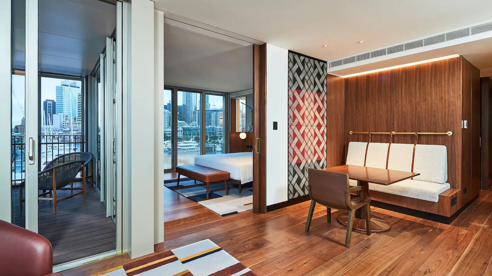
Auckland · 4 nights
Park Hyatt Auckland
Harbour Suite & connecting Deluxe Room · 4 twin beds
On the water at Wynyard Quarter, looking across the Lighter Basin to the Waitematā. A 25-metre infinity pool, a day spa and four restaurants, with the city on its doorstep.
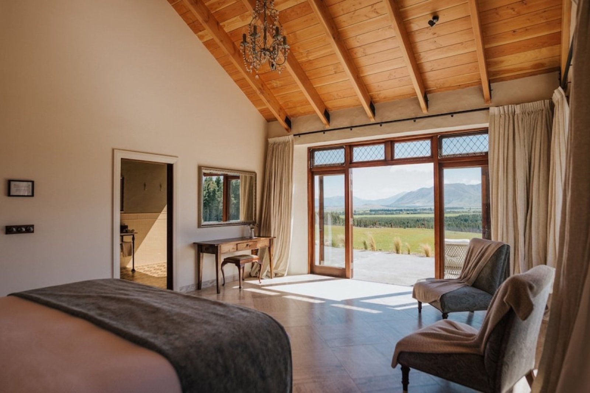
Lake Pūkaki · 2 nights
Mt Cook Lakeside Retreat
Two-bedroom villa · 4 twin beds · private Fantail Spa
A villa on the shore of Lake Pūkaki with Aoraki/Mount Cook filling the view, and your own outdoor spa. Full board throughout, in the heart of the Dark Sky Reserve.
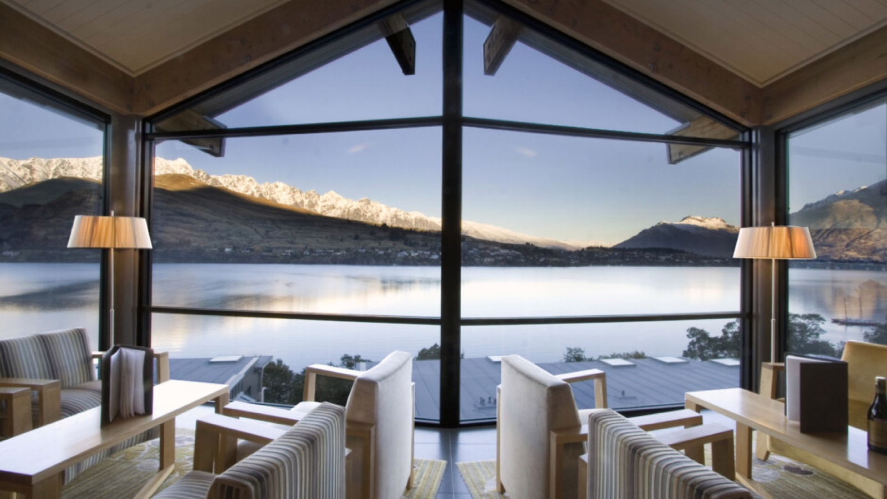
Queenstown · 7 nights
The Rees Hotel & Luxury Apartments
Two-bedroom Lake View Apartment · 1 super king bed & 2 twin beds
Above Lake Wakatipu looking across to the Remarkables, with a private beach and wharf, a courtesy shuttle into town, and breakfast each morning.
Day by Day
Four unhurried nights in Auckland open the trip, with Waiheke and the coast, before you fly south into the Southern Alps. The South Island is some of the most beautiful country on earth, and the route is shaped to take in its greatest sights: the glaciers and dark skies of Aoraki/Mount Cook, then a long, settled week in Queenstown for Glenorchy, Central Otago wine and the lakes, with several days left open. A private Mandarin-speaking guide is with you on each touring day. The days at leisure are yours to spend as you like, and a guide can be arranged for those as well.
Day 1
Monday, 14 December
Park Hyatt Auckland
Harbour Suite & connecting Deluxe Room · 4 twin beds
BLD
Arrival day · own arrangements
Arrive in Auckland and settle in on the waterfront
Arrive in Auckland. CX113 from Hong Kong arrives at 1:25pm. Make your own way from the airport to the Park Hyatt, on the water at Wynyard Quarter. (International flights and this transfer are your own arrangement; a private transfer can be added if you'd prefer.)
Settle in on the waterfront. The rest of the day is yours. The hotel has a 25-metre infinity pool, a day spa, and four restaurants and bars, with the harbour just outside.
Day 2
Tuesday, 15 December
Park Hyatt Auckland
Harbour Suite & connecting Deluxe Room · 4 twin beds
BLD
At leisure · guide on request
Second arrival, and Auckland at leisure
Arrive in Auckland. CX195 from Hong Kong arrives at 6:45am, with the same own-arrangement transfer through to the Park Hyatt.
A free day in Auckland, with no fixed plans, to settle into the time difference at your own pace.
Ideas, at your own arrangement. A cruise or a sail on the Waitematā, the ferry across to Devonport, the Auckland Art Gallery and the Domain, or the cafés and galleries around Viaduct Harbour and Wynyard Quarter, all within reach of the hotel.
Day 3
Wednesday, 16 December
Park Hyatt Auckland
Harbour Suite & connecting Deluxe Room · 4 twin beds
BLD
Private Mandarin-speaking guide
Ferry to Waiheke Island for vineyard tastings and a long lunch
Ferry to Waiheke Island. Your Mandarin-speaking guide meets you in the hotel lobby after breakfast. From there it is a ten-minute stroll to the terminal for the morning ferry across the Hauraki Gulf, about 40 minutes.
Private Waiheke Food & Wine Tour. A relaxed day among the island's vineyards with a local guide: tastings at two of Waiheke's best-loved wineries, a long vineyard lunch, and local olive oil and produce to try, with wide views over the gulf throughout. Your Mandarin-speaking guide joins you throughout. Back to the ferry in the late afternoon.
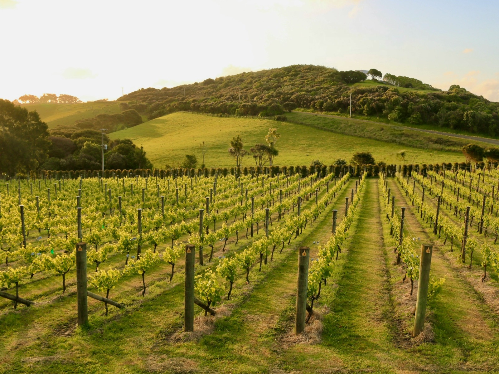
Vines above the gulf, Waiheke Island
Day 4
Thursday, 17 December
Park Hyatt Auckland
Harbour Suite & connecting Deluxe Room · 4 twin beds
BLD
Private Mandarin-speaking guide
Private Auckland City Tour, then the All Blacks Experience
Private Auckland City Tour. A full day along Auckland's east coast with your guide: the views across to Rangitoto from Achilles Point, the significance of Bastion Point, then over the harbour bridge to the North Shore and the Victorian village of Devonport, finishing with the short climb up Mount Victoria for a 360-degree view over the city and gulf. Lunch is settled locally.
The All Blacks Experience. Back in the city in the afternoon, a 45-minute guided experience: the story and spirit of New Zealand's teams in black, a chance to face the haka, and an interactive zone to test your rugby skills. More than a rugby attraction, it is a window into Māori culture.
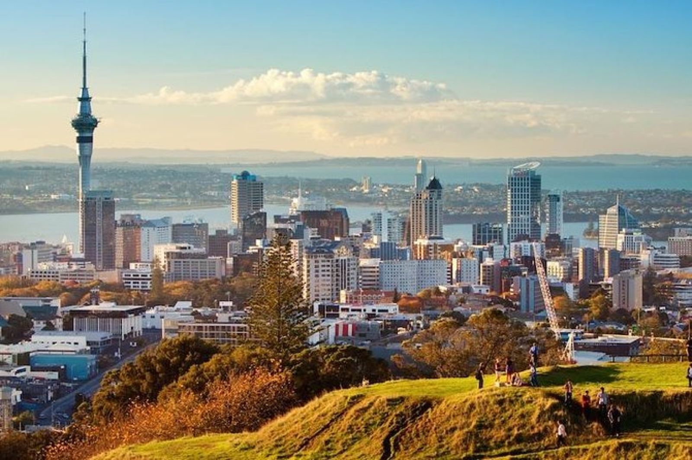
Auckland and the harbour from the summit of Mount Victoria
Day 5
Friday, 18 December
Mt Cook Lakeside Retreat
Two-bedroom villa · 4 twin beds · private Fantail Spa
BLD
Private Mandarin-speaking driver-guide
Fly to Christchurch and drive to Aoraki/Mount Cook, stargazing in the Dark Sky Reserve
Private transfer and flight to Christchurch. A private transfer from the Park Hyatt to the airport, then the flight south to Christchurch, around 1½ hours.
Drive to Mount Cook with touring. Your Mandarin-speaking driver-guide meets you in Christchurch for the drive inland to Aoraki/Mount Cook, across the Canterbury Plains and up into the Mackenzie Country, the land opening into golden tussock grass and turquoise glacial lakes.
Mt Cook Lakeside Retreat. Arrive mid-afternoon at your two-bedroom villa on the shore of Lake Pūkaki, with Aoraki/Mount Cook filling the view. A bottle of New Zealand sparkling is waiting, and dinner is a three-course evening meal, served either at the retreat's restaurant, The Moraine, or brought to your villa for a private dinner.
Dark Sky Reserve Stargazing Experience. Later in the evening, join the team in the Pūkaki Cellar Observatory, in the heart of the Aoraki Mackenzie Dark Sky Reserve and among the clearest night skies on earth. A glass of wine or whisky in the cellar, then an astronomer to guide you through the southern stars by telescope. (Weather dependent.)
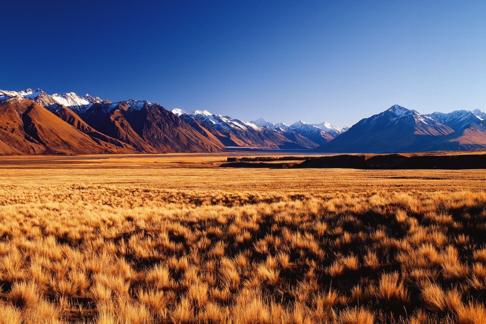
The Mackenzie Country, on the drive inland
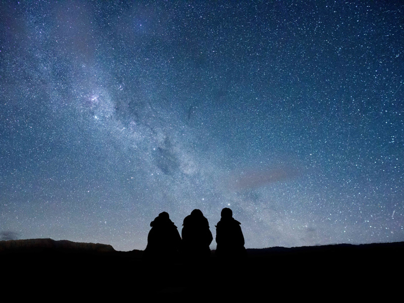
The southern sky from the Aoraki Mackenzie Dark Sky Reserve
Day 6
Saturday, 19 December
Mt Cook Lakeside Retreat
Two-bedroom villa · 4 twin beds · private Fantail Spa
BLD
Private Mandarin-speaking driver-guide
Helicopter and ski plane scenic flight over Aoraki/Mount Cook and the Tasman Glacier
The Ultimate Alpine Experience. The day's highlight, and the finest way to see the Southern Alps: fly by ski plane and helicopter on the same day over Aoraki/Mount Cook, up the Tasman Valley past the Hochstetter Icefall to a snow landing high on the Tasman Glacier, where the aircraft falls silent. Time on the glacier before swapping aircraft for the flight back.
Afternoon at Mount Cook. Rejoin your guide to explore the national park at your own pace: the Hooker Valley Track, the Sir Edmund Hillary Alpine Centre, or the shore of Lake Pūkaki with the mountain above.
Dinner at the retreat. Breakfast, a hiker's lunch and a three-course dinner are provided each day of your stay.
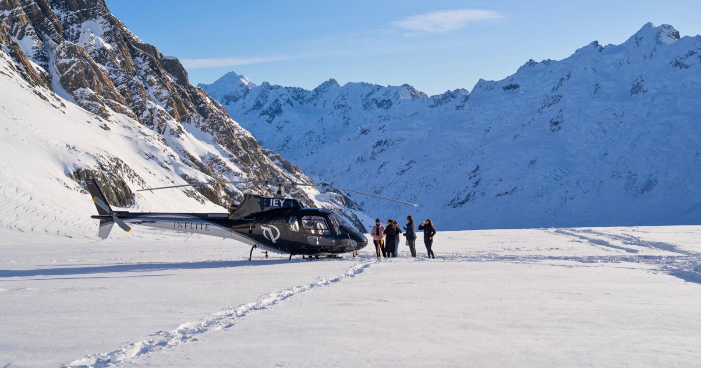
A snow landing high in the Southern Alps
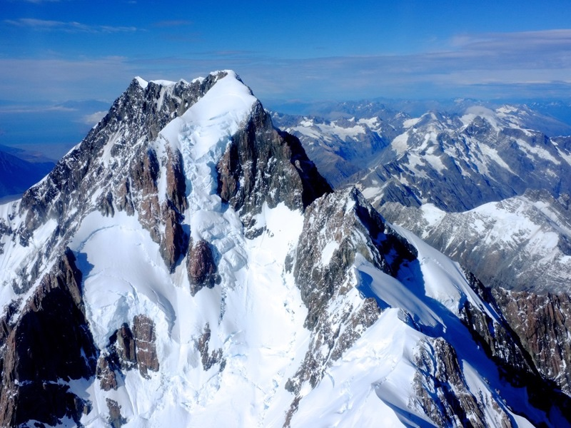
Aoraki/Mount Cook from the air
Day 7
Sunday, 20 December
The Rees Hotel & Luxury Apartments
Two-bedroom Lake View Apartment · 1 super king bed & 2 twin beds
BLD
Private Mandarin-speaking driver-guide
Over the Lindis Pass through Central Otago to Queenstown
Drive to Queenstown with touring. Leave the mountains after breakfast for another of the South Island's great drives, back over the Lindis Pass and down through Central Otago to Queenstown, your guide stopping at the sights along the way.
The Rees Hotel & Luxury Apartments. Check in to your two-bedroom lake-view apartment above Lake Wakatipu, looking across to the Remarkables, with a private beach and wharf, a courtesy shuttle into town, and breakfast each morning. The evening is yours.
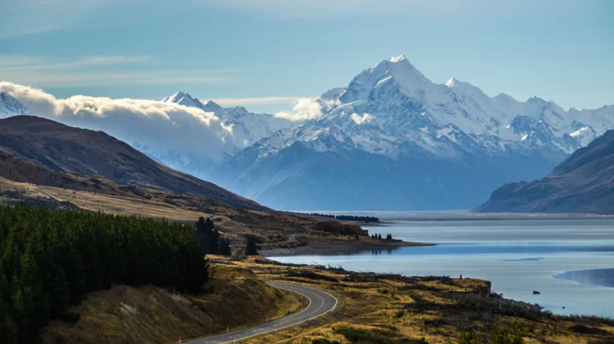
The road south from Aoraki/Mount Cook
Day 8
Monday, 21 December
The Rees Hotel & Luxury Apartments
Two-bedroom Lake View Apartment · 1 super king bed & 2 twin beds
BLD
Private Mandarin-speaking driver-guide
Full-day Queenstown tour: the lakes, alpine passes and Arrowtown
Queenstown Full Day Tour. A full day exploring Queenstown and its surrounds with your guide, shaped around what you feel like: the lakes and alpine passes, high-country landscapes, the wineries of Gibbston, or the historic gold-rush village of Arrowtown. Lunch and entry fees are settled locally.
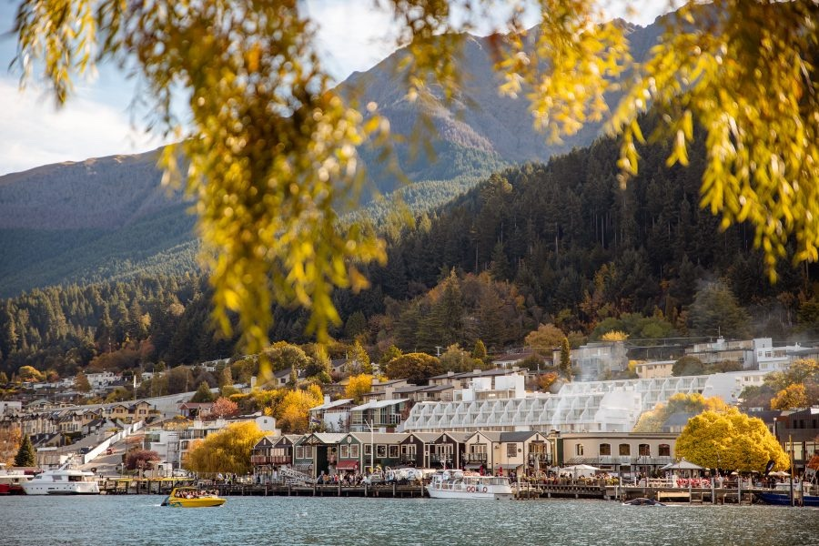
The Queenstown lakefront, Lake Wakatipu
Day 9
Tuesday, 22 December
The Rees Hotel & Luxury Apartments
Two-bedroom Lake View Apartment · 1 super king bed & 2 twin beds
BLD
Private Mandarin-speaking driver-guide
Helicopter over Milford Sound, alpine landings at Glenorchy and a Dart River jet boat
Private Peaks to Paradise Flight with Milford Sound Flyover. From 8am, a morning that is hard to better. Your driver-guide takes you out to the Glenorchy airfield and you lift off by helicopter over Lake Whakatipu and the Dart River, west into the heart of Fiordland for a flyover of Milford Sound and the forests, glaciers and lakes around it. Back over the ranges, you set down high on exclusive Mount Alfred, where the engine falls silent for 360-degree views over mountains, rivers and the lake below, then again beneath the hanging glacier and cascading waterfalls of the Earnslaw Burn. (Weather dependent.)
Dart River Wilderness Jet. From Paradise, a private wilderness jet boat carries you back down the braided Dart River, beneath towering peaks and untouched forest inside Te Wāhipounamu, the South West New Zealand World Heritage Area, with stories and legends along the way and a few classic spins in the shallow channels.
Afternoon in Glenorchy. After the jet boat, a relaxed afternoon among the lakes, native forest and Lord of the Rings filming locations, with a generous platter lunch at Mrs Woolly's (settled locally). Back to Queenstown in the late afternoon.
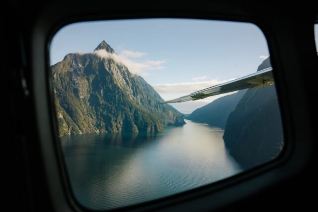
Milford Sound from the air
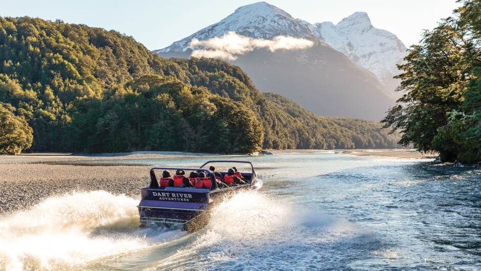
The Dart River wilderness jet, Glenorchy
Day 10
Wednesday, 23 December
The Rees Hotel & Luxury Apartments
Two-bedroom Lake View Apartment · 1 super king bed & 2 twin beds
BLD
Private Mandarin-speaking driver-guide
Queenstown wine tour: Central Otago pinot noir and the Cardrona Distillery
Gibbston Valley Wine Tour. Into the Gibbston Valley, the “Valley of the Vines” set between schist mountains and the Kawarau gorge, for two tastings at some of Central Otago's finest pinot noir cellar doors, with a relaxed winery lunch along the way (settled locally).
Cardrona Distillery. In the afternoon, on to the remote Cardrona Distillery for a 75-minute tour, watching whisky and gin made from scratch and tasting across the range. Back to Queenstown by evening.
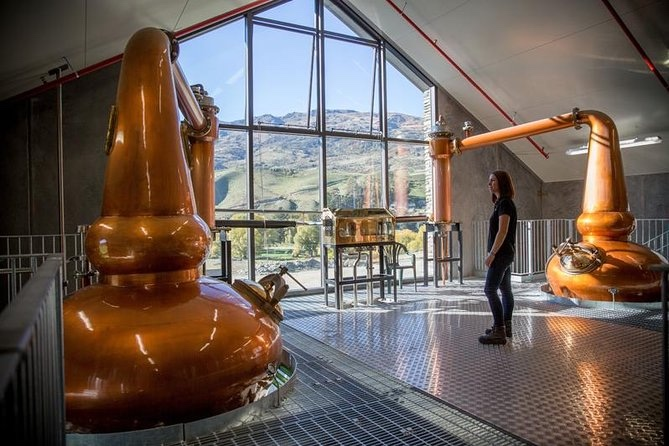
The stills at Cardrona Distillery
Day 11
Thursday, 24 December
The Rees Hotel & Luxury Apartments
Two-bedroom Lake View Apartment · 1 super king bed & 2 twin beds
BLD
At leisure · guide on request
Queenstown at leisure
Free day in Queenstown, the adventure capital, to spend however suits you.
Ideas, at your own arrangement. A cruise on the vintage TSS Earnslaw to Walter Peak, the Skyline Gondola, a jet boat on the Dart or Shotover, e-biking the Arrow River trail to Gibbston, or the Onsen hot pools above the Shotover canyon.
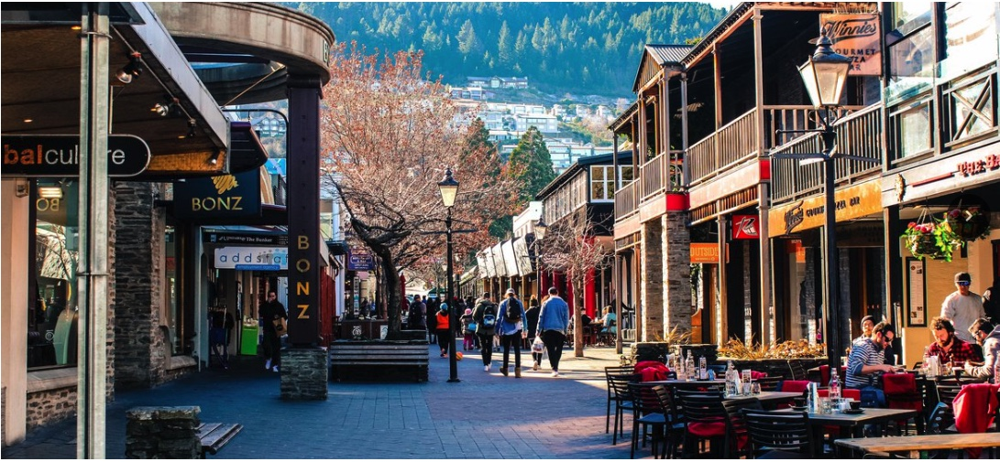
The town centre, Queenstown
Day 12
Friday, 25 December
The Rees Hotel & Luxury Apartments
Two-bedroom Lake View Apartment · 1 super king bed & 2 twin beds
BLD
At leisure · guide on request
Christmas Day at leisure in Queenstown
Christmas Day in Queenstown, a free day over the holiday, entirely yours. A Christmas lunch or dinner can be arranged if you'd like.
Day 13
Saturday, 26 December
The Rees Hotel & Luxury Apartments
Two-bedroom Lake View Apartment · 1 super king bed & 2 twin beds
BLD
At leisure · guide on request
Queenstown and Wānaka at leisure
Free day around Queenstown and Wānaka.
Ideas, at your own arrangement. The drive over to Wānaka and Mount Aspiring National Park, the Rob Roy Glacier or Mount Iron walks, the wineries and Rippon vineyard above Lake Wānaka, or Arrowtown's cafés and gold-rush history.
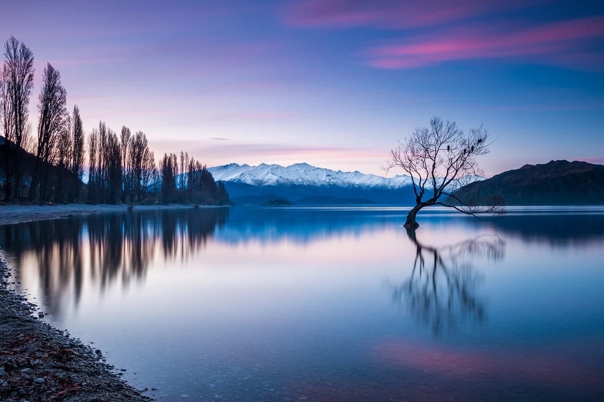
Lake Wānaka at dusk
Day 14
Sunday, 27 December
Departure
Queenstown Airport
BLD
Departure day · own arrangements
Fly Queenstown to Auckland, and home to Hong Kong
Depart Queenstown. After breakfast, make your own way to Queenstown Airport for your onward flight to Auckland, before catching your international flight back to Hong Kong, departing at 2:55pm. (Flights and this transfer are your own arrangement; a private transfer can be added if you'd prefer.)
Meals:B Breakfast · L Lunch · D Dinner · a faded circle indicates a meal at leisure. Breakfast is included at the Park Hyatt and The Rees; the Mt Cook retreat is full board. Timings are indicative and confirmed closer to travel.
Trip Costs
Total · party of four
HK$386,000
Approximately HK$96,500 per person
Priced in Hong Kong Dollars. Indicative and subject to availability and final confirmation. Based on current operator and exchange rates, and may be adjusted for any fuel surcharges advised before travel.
Inclusions & Exclusions
Included
Private Mandarin-speaking guide in Auckland, and a private Mandarin-speaking driver-guide through the South Island, on each touring day (days at leisure are without a guide; one can be arranged on request)
13 nights' accommodation as listed
Domestic flight: Auckland–Christchurch (economy)
Private touring and transfers shown in the schedule (see Exclusions for the arrival and departure airport transfers)
Auckland: The All Blacks Experience; Waiheke return ferry and private food & wine tour with vineyard lunch; full-day private Auckland coast and city tour
Mount Cook: Christchurch–Mt Cook transfer with touring, The Ultimate Alpine Experience by helicopter and ski plane, Mount Cook afternoon tour, and Dark Sky Reserve stargazing at the Pūkaki Cellar Observatory
Queenstown: full-day tour, Glenorchy Peaks to Paradise helicopter with Milford Sound flyover, alpine landings and Dart River wilderness jet boat, afternoon Glenorchy tour, and Central Otago wine with Cardrona Distillery tour
Breakfast daily at the Park Hyatt and The Rees; full board at the Mt Cook retreat, with welcome sparkling wine
Exclusions
International flights to and from New Zealand
Airport transfers on arrival (Day 1) and departure (Day 14), by your own arrangement, or added at a cost
Travel, medical and evacuation insurance
Meals not specified in the schedule, including lunches on touring days and dinners in Auckland and Queenstown
Activities and entry fees on leisure days
Optional upgrades and suggested activities (see below)
Personal expenses and gratuities
Any fuel surcharges advised before travel
Add On Options
A few experiences that can be added to your days in the south, if you would like a little more adventure in the mix. Each is arranged privately for your family and priced on request.
Wānaka · Day 7 · on the drive to Queenstown
Hāwea Rafting & Tipi Lunch
Break the transfer day with a rafting run on the Hāwea River near Wānaka, gentle grade-two rapids and clear swimming holes, followed by a picnic lunch in a Nordic tipi on the riverbank.
On request
per person
Queenstown · Day 8
Kawarau Bridge Bungy
The original 43-metre bungy off the Kawarau Bridge, the world home of bungy, above the Kawarau Gorge. Choose to touch the water or stay dry, solo or tandem.
On request
per person
Queenstown · Day 8
Skyline Gondola & Luge
Ride the steepest cable car in the Southern Hemisphere up Bob's Peak for a 220-degree panorama over Queenstown and Lake Wakatipu, then three luge rides down the purpose-built track.
On request
per person
Gibbston Valley · Day 10
Oxbow Thrill Seeker
A three-in-one adventure near Gibbston: a jet sprint boat on a purpose-built racetrack, the Ultimate Off-Roader over steep terrain, and clay target shooting against the mountains.
On request
per person
Guide availability on your leisure days, and further touring, can also be arranged at an additional cost. Just let us know.